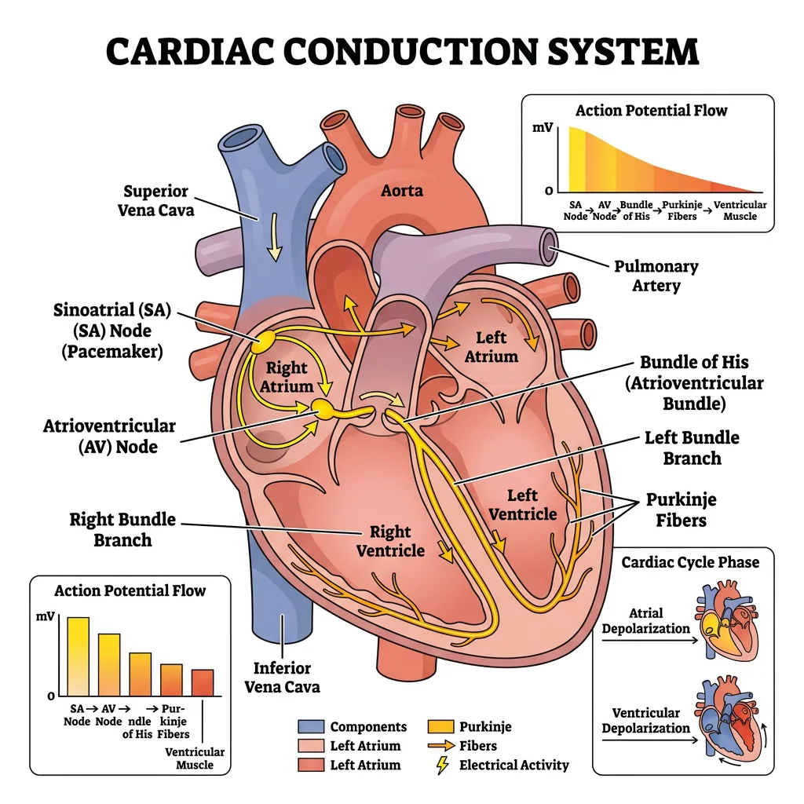
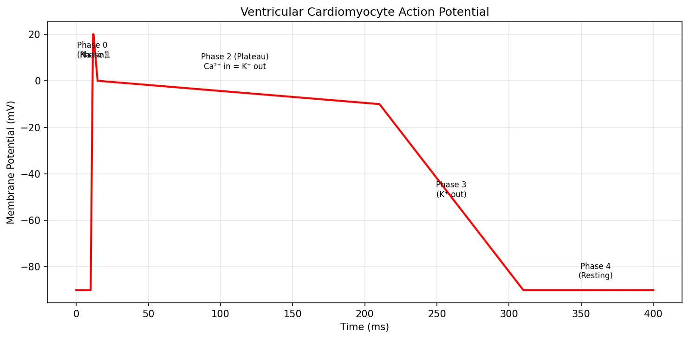
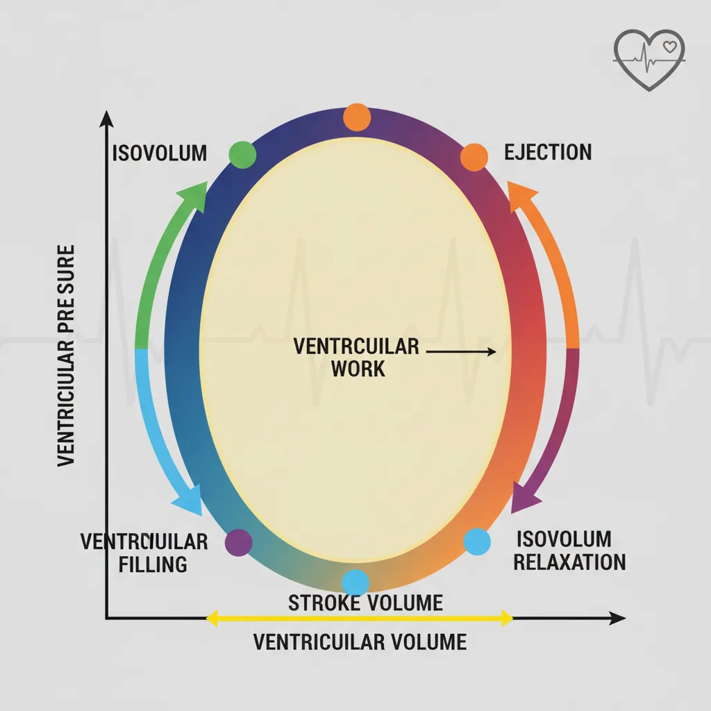
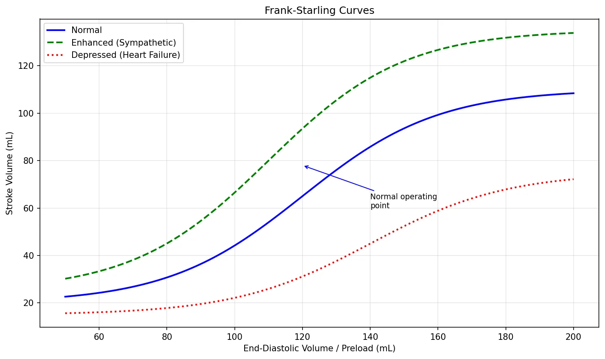
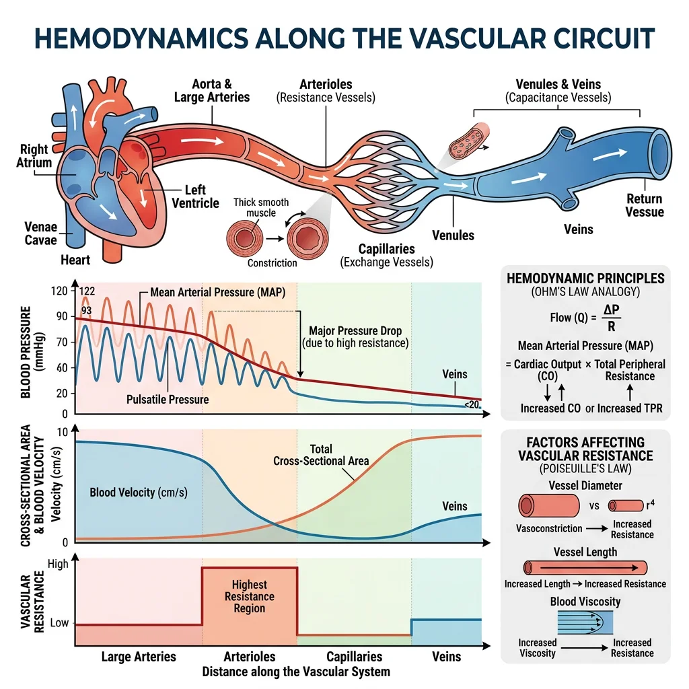
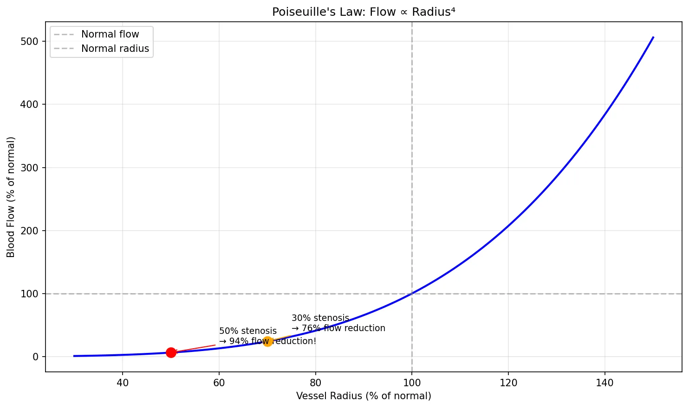
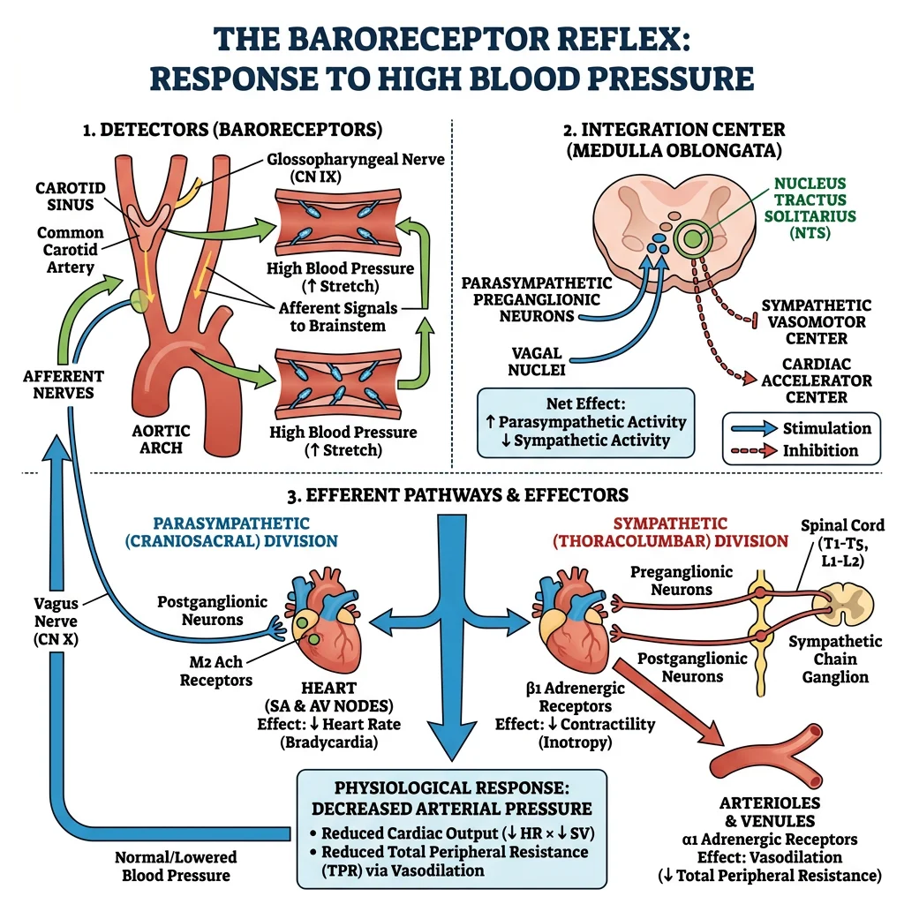
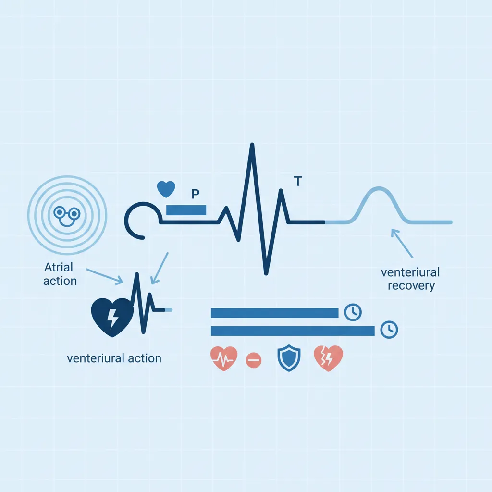

Physiology Mastery
Homeostasis & Feedback
Set points, feedback loops, allostasisNeurophysiology & Action Potentials
Neurons, action potentials, synapsesCardiac Electrophysiology & Hemodynamics
Heart rhythm, hemodynamics, cardiac outputRespiratory Mechanics & Gas Exchange
Breathing mechanics, gas exchange, V/QRenal Physiology & Fluid Balance
Nephron function, filtration, acid-baseGI Physiology & Absorption
Motility, secretion, nutrient absorptionEndocrine Regulation & Metabolism
Hormones, thyroid, adrenal, metabolismExercise Physiology & Adaptation
Acute responses, training adaptationsCellular & Membrane Physiology
Ion transport, signaling, second messengersBlood & Immune Physiology
Hematopoiesis, coagulation, immunityReproductive & Developmental
Reproduction, pregnancy, fetal physiologyIntegrative & Clinical Physiology
Stress, shock, sepsis, agingCardiac Electrical System
The heart is unique among muscles — it generates its own rhythmic electrical impulses without any external nervous input. Cut every nerve to the heart, and it still beats. This property, called automaticity, arises from specialised pacemaker cells that spontaneously depolarise, setting the tempo for the entire organ. Understanding the cardiac electrical system is the gateway to interpreting ECGs, diagnosing arrhythmias, and managing life-threatening cardiac emergencies.

flowchart LR
SA["SA Node\n(Pacemaker)"] --> ATRIAL["Atrial\nDepolarization\n(P wave)"]
ATRIAL --> AV["AV Node\n(Delay: 0.1s)"]
AV --> HIS["Bundle\nof His"]
HIS --> BB["Bundle\nBranches"]
BB --> PURK["Purkinje\nFibers"]
PURK --> VENT["Ventricular\nDepolarization\n(QRS complex)"]
VENT --> REPOL["Ventricular\nRepolarization\n(T wave)"]
Pacemaker vs Contractile Cells
The heart contains two fundamentally different cell types, each with a distinct electrophysiology:
| Feature | Pacemaker Cells | Contractile (Working) Cells |
|---|---|---|
| Location | SA node, AV node | Atrial & ventricular myocardium |
| Resting Potential | –60 mV (unstable — drifts towards threshold) | –90 mV (stable) |
| Automaticity | Yes — "funny current" (If) causes slow diastolic depolarisation | No — requires external stimulation |
| Phase 0 Upstroke | Slow — carried by Ca²⁺ (L-type channels) | Fast — carried by Na⁺ (voltage-gated) |
| Plateau Phase | Absent | Phase 2 — prolonged Ca²⁺ influx |
| Primary Function | Generate & conduct impulses | Mechanical contraction |
| Speed of Conduction | Slow (0.01–0.05 m/s at AV node) | Fast (0.3–1.0 m/s in myocardium) |
Conduction Pathway (SA → AV → His-Purkinje)
The cardiac impulse follows a precise anatomical route, ensuring coordinated contraction:
- SA Node (sinoatrial) — the primary pacemaker at the junction of the superior vena cava and right atrium. Intrinsic rate: 60–100 bpm
- Atrial Conduction — impulse spreads through atrial myocardium and three internodal pathways (anterior/Bachmann's, middle/Wenckebach, posterior/Thorel)
- AV Node (atrioventricular) — located in the interatrial septum near the coronary sinus. Intrinsic rate: 40–60 bpm. Introduces a critical 0.1-second delay allowing atrial contraction to complete before ventricular filling
- Bundle of His — penetrates the fibrous skeleton separating atria from ventricles (the only electrical connection)
- Bundle Branches — right and left (the left further divides into anterior and posterior fascicles)
- Purkinje Fibres — fastest conducting tissue in the heart (2–4 m/s), ensuring near-simultaneous ventricular depolarisation from apex to base. Intrinsic rate: 20–40 bpm
Stannius Ligature Experiments (1852)
Hermann Stannius performed elegant ligature experiments on frog hearts that demonstrated the hierarchy of cardiac pacemakers:
- First ligature (between sinus venosus and atrium): atrium and ventricle stop — proving the sinus drives the heartbeat
- Second ligature (AV groove): ventricle resumes beating at its own slower rate — proving subsidiary pacemakers exist
These experiments established the concept of a pacemaker hierarchy 150 years before molecular biology could identify the ionic mechanisms.
Cardiac Action Potentials
Ventricular contractile cells exhibit a distinctive five-phase action potential that lasts 250–300 ms — about 100 times longer than a skeletal muscle action potential:
| Phase | Name | Ion Movement | Description |
|---|---|---|---|
| 0 | Rapid Depolarisation | Na⁺ influx (fast channels) | Rapid upstroke from –90 mV to +20 mV in ~1 ms |
| 1 | Early Repolarisation | K⁺ efflux (Ito) | Brief notch as transient outward K⁺ channels open |
| 2 | Plateau | Ca²⁺ influx = K⁺ efflux | L-type Ca²⁺ channels balance K⁺ efflux for ~200 ms — triggers contraction |
| 3 | Repolarisation | K⁺ efflux (IKr, IKs) | Ca²⁺ channels inactivate; delayed rectifier K⁺ currents restore RMP |
| 4 | Resting Potential | K⁺ leak (IK1) | Stable at –90 mV; Na⁺/K⁺-ATPase restores ionic gradients |
The prolonged plateau (Phase 2) is critically important — it creates a long effective refractory period (ERP) that prevents tetanic contraction of the heart. Unlike skeletal muscle, which can sustain contraction, the heart must relax between beats to refill with blood.
import numpy as np
import matplotlib.pyplot as plt
# Simulate ventricular action potential (simplified 5-phase model)
time = np.linspace(0, 400, 1000) # milliseconds
vm = np.zeros_like(time)
# Phase 4: resting (-90 mV)
vm[:] = -90
# Phase 0: rapid depolarisation (0-2 ms)
phase0 = (time >= 10) & (time < 12)
vm[phase0] = np.linspace(-90, 20, phase0.sum())
# Phase 1: early repolarisation (2-5 ms)
phase1 = (time >= 12) & (time < 15)
vm[phase1] = np.linspace(20, 0, phase1.sum())
# Phase 2: plateau (5-200 ms)
phase2 = (time >= 15) & (time < 210)
vm[phase2] = np.linspace(0, -10, phase2.sum())
# Phase 3: repolarisation (200-300 ms)
phase3 = (time >= 210) & (time < 310)
vm[phase3] = np.linspace(-10, -90, phase3.sum())
plt.figure(figsize=(10, 5))
plt.plot(time, vm, 'r-', linewidth=2)
plt.xlabel('Time (ms)')
plt.ylabel('Membrane Potential (mV)')
plt.title('Ventricular Cardiomyocyte Action Potential')
# Annotate phases
plt.annotate('Phase 0\n(Na⁺ in)', xy=(11, 10), fontsize=8, ha='center')
plt.annotate('Phase 1', xy=(13, 10), fontsize=8, ha='center')
plt.annotate('Phase 2 (Plateau)\nCa²⁺ in = K⁺ out', xy=(110, 5), fontsize=8, ha='center')
plt.annotate('Phase 3\n(K⁺ out)', xy=(260, -50), fontsize=8, ha='center')
plt.annotate('Phase 4\n(Resting)', xy=(360, -85), fontsize=8, ha='center')
plt.grid(True, alpha=0.3)
plt.tight_layout()
plt.show()

ECG Interpretation Basics
The electrocardiogram (ECG/EKG) records the heart's electrical activity from the body surface. Willem Einthoven invented the string galvanometer in 1903 and won the Nobel Prize in 1924 for this work. The standard 12-lead ECG provides 12 different "views" of the heart's electrical activity.
| Component | Represents | Normal Duration | Clinical Significance |
|---|---|---|---|
| P Wave | Atrial depolarisation | < 0.12 s | Absent in atrial fibrillation; peaked in right atrial enlargement |
| PR Interval | Conduction from SA to AV to His | 0.12–0.20 s | >0.20 s = first-degree AV block |
| QRS Complex | Ventricular depolarisation | < 0.12 s | >0.12 s = bundle branch block or ventricular rhythm |
| ST Segment | Ventricular plateau (Phase 2) | Isoelectric | Elevation = acute MI (STEMI); Depression = ischaemia |
| T Wave | Ventricular repolarisation | — | Peaked = hyperkalaemia; Inverted = ischaemia/strain |
| QT Interval | Total ventricular electrical activity | 0.36–0.44 s (rate-corrected) | Prolonged = risk of Torsades de Pointes |
Systematic ECG Reading Approach
Always follow a methodical approach — never rely on pattern recognition alone:
- Rate — 300 ÷ (number of large boxes between R-R) or count R waves in 6 seconds × 10
- Rhythm — regular or irregular? P wave before every QRS?
- Axis — normal (–30° to +90°), left deviation, right deviation
- Intervals — PR, QRS, QT durations
- Morphology — P wave, QRS, ST segment, T wave abnormalities
Mechanical Function
Electrical events drive mechanical events — the heart is ultimately a pump. Every beat propels approximately 70 mL of blood (the stroke volume) into the circulation. At 72 beats per minute, that's over 5 litres per minute at rest and up to 25 L/min during maximal exercise. Understanding the mechanical function of the heart is essential for managing heart failure, valvular disease, and cardiogenic shock.

Cardiac Cycle Phases
The cardiac cycle describes the sequence of pressure and volume changes during one complete heartbeat (~0.8 s at 75 bpm). Think of it as a precisely choreographed four-act play:
| Phase | Duration | Valves | What Happens |
|---|---|---|---|
| Ventricular Filling | ~0.5 s | AV valves open; semilunar closed | Passive filling (80%) then atrial contraction ("atrial kick" — 20%). Loss of atrial kick in AF reduces CO by ~25% |
| Isovolumic Contraction | ~0.05 s | All valves closed | Ventricle contracts, pressure rises rapidly. Volume unchanged — isovolumic. First heart sound (S1) from AV valve closure |
| Ejection | ~0.3 s | Semilunar valves open; AV closed | Rapid then reduced ejection. Aortic pressure rises. Normal ejection fraction (EF): 55–70% |
| Isovolumic Relaxation | ~0.08 s | All valves closed | Ventricle relaxes, pressure drops rapidly. Second heart sound (S2) from semilunar valve closure. Dicrotic notch on aortic pressure tracing |
Stroke Volume & Cardiac Output
Two fundamental equations define cardiac pump function:
Stroke Volume (SV) = End-Diastolic Volume (EDV) – End-Systolic Volume (ESV)
Typical: 120 mL – 50 mL = 70 mL
Cardiac Output (CO) = Stroke Volume × Heart Rate
Typical: 70 mL × 72 bpm = ~5,040 mL/min ≈ 5 L/min
Ejection Fraction (EF) = SV ÷ EDV × 100
Normal: 70 ÷ 120 × 100 = ~58% (normal ≥ 55%)
Frank-Starling Mechanism
Otto Frank (1895) and Ernest Starling (1914) independently discovered the most elegant self-regulatory mechanism of the heart:
Molecular Mechanism: Increased stretch brings actin and myosin filaments to a more optimal overlap position and increases troponin C sensitivity to calcium (length-dependent activation). At the organ level, stretching the right atrial wall also triggers the Bainbridge reflex — increased heart rate in response to increased venous return.
import numpy as np
import matplotlib.pyplot as plt
# Frank-Starling curve simulation
edv = np.linspace(50, 200, 100) # End-diastolic volume (mL)
# Normal curve (sigmoidal function)
sv_normal = 90 / (1 + np.exp(-0.05 * (edv - 120))) + 20
# Enhanced contractility (e.g., sympathetic stimulation)
sv_enhanced = 110 / (1 + np.exp(-0.05 * (edv - 110))) + 25
# Depressed contractility (e.g., heart failure)
sv_depressed = 60 / (1 + np.exp(-0.05 * (edv - 140))) + 15
plt.figure(figsize=(10, 6))
plt.plot(edv, sv_normal, 'b-', linewidth=2, label='Normal')
plt.plot(edv, sv_enhanced, 'g--', linewidth=2, label='Enhanced (Sympathetic)')
plt.plot(edv, sv_depressed, 'r:', linewidth=2, label='Depressed (Heart Failure)')
plt.xlabel('End-Diastolic Volume / Preload (mL)')
plt.ylabel('Stroke Volume (mL)')
plt.title('Frank-Starling Curves')
plt.legend()
plt.grid(True, alpha=0.3)
plt.annotate('Normal operating\npoint', xy=(120, 78), fontsize=9,
arrowprops=dict(arrowstyle='->', color='blue'),
xytext=(140, 60))
plt.tight_layout()
plt.show()

Preload, Afterload & Contractility
The three determinants of stroke volume can be remembered from the perspective of the ventricle:
| Determinant | Definition | Clinical Proxy | Increased By | Decreased By |
|---|---|---|---|---|
| Preload | Degree of ventricular stretch at end-diastole | EDV, LVEDP, PCWP | IV fluids, leg elevation, blood transfusion | Diuretics, nitroglycerin, haemorrhage |
| Afterload | Resistance the ventricle must overcome to eject blood | Aortic pressure, SVR | Aortic stenosis, hypertension, vasoconstriction | Vasodilators (ACE inhibitors, hydralazine) |
| Contractility | Intrinsic strength of contraction (independent of preload/afterload) | EF, dP/dt | Catecholamines, digoxin, calcium | Heart failure, β-blockers, acidosis, hypoxia |
Hemodynamics
Hemodynamics is the physics of blood flow — how pressure, flow, and resistance interact throughout the vascular system. Just as Ohm's law governs electrical circuits (V = IR), an analogous relationship governs the circulation: ΔP = Q × R (pressure gradient = flow × resistance). This section applies fluid physics to the living circulation.

Blood Pressure Determinants
Blood pressure is determined by two fundamental variables:
MAP ≈ Diastolic BP + ⅓(Systolic – Diastolic)
Normal: ~93 mmHg (e.g., 120/80 → 80 + ⅓(40) = 93 mmHg)
MAP must exceed 60 mmHg for adequate organ perfusion
| Parameter | Normal Range | Clinical Significance |
|---|---|---|
| Systolic BP | < 120 mmHg | Peak pressure during ventricular ejection |
| Diastolic BP | < 80 mmHg | Minimum pressure during ventricular relaxation; reflects TPR |
| Pulse Pressure | ~40 mmHg | SBP – DBP; widened in aortic regurgitation, atherosclerosis |
| MAP | 70–105 mmHg | Driving pressure for organ perfusion |
Flow, Resistance & Compliance
Three interdependent concepts govern haemodynamics:
- Flow (Q) = ΔP / R (analogous to Ohm's law: I = V / R)
- Resistance (R) — opposition to flow; primarily determined by arteriolar diameter. Arterioles are the "resistance vessels" and the major site for blood pressure regulation
- Compliance (C) = ΔV / ΔP — the ability of a vessel to stretch. Veins have high compliance (capacitance vessels holding ~65% of blood volume). Arteries have lower compliance but higher elastic recoil (Windkessel function)
Poiseuille's Law
Jean Léonard Marie Poiseuille (1838) derived the mathematical relationship between flow and vessel dimensions:
Where: Q = flow, ΔP = pressure gradient, r = vessel radius, η = blood viscosity, L = vessel length
The r⁴ relationship is the most important concept — doubling the radius increases flow 16-fold. This is why small changes in arteriolar diameter have enormous effects on blood pressure and why atherosclerosis (which narrows vessels) is so devastating.
import numpy as np
import matplotlib.pyplot as plt
# Poiseuille's Law: demonstrate r^4 relationship
radius_fraction = np.linspace(0.3, 1.5, 100) # Fraction of normal radius
flow_fraction = radius_fraction ** 4 # Flow relative to normal
plt.figure(figsize=(10, 6))
plt.plot(radius_fraction * 100, flow_fraction * 100, 'b-', linewidth=2)
plt.axhline(y=100, color='gray', linestyle='--', alpha=0.5, label='Normal flow')
plt.axvline(x=100, color='gray', linestyle='--', alpha=0.5, label='Normal radius')
# Mark clinically relevant points
plt.plot(50, (0.5**4)*100, 'ro', markersize=10)
plt.annotate('50% stenosis\n→ 94% flow reduction!', xy=(50, (0.5**4)*100),
xytext=(60, 20), fontsize=9,
arrowprops=dict(arrowstyle='->', color='red'))
plt.plot(70, (0.7**4)*100, 'o', color='orange', markersize=10)
plt.annotate('30% stenosis\n→ 76% flow reduction', xy=(70, (0.7**4)*100),
xytext=(75, 40), fontsize=9,
arrowprops=dict(arrowstyle='->', color='orange'))
plt.xlabel('Vessel Radius (% of normal)')
plt.ylabel('Blood Flow (% of normal)')
plt.title("Poiseuille's Law: Flow ∝ Radius⁴")
plt.legend()
plt.grid(True, alpha=0.3)
plt.tight_layout()
plt.show()

Microcirculation & Capillary Exchange
Capillaries are the functional unit of the circulation — where the actual business of gas exchange, nutrient delivery, and waste removal occurs. There are approximately 10 billion capillaries with a total surface area of ~500 m².
Starling Forces (Capillary Exchange)
Ernest Starling (the same Starling of the heart law) described the forces governing fluid movement across capillary walls:
| Force | Arteriolar End | Venular End | Effect |
|---|---|---|---|
| Capillary hydrostatic pressure (Pc) | 35 mmHg | 15 mmHg | Pushes fluid OUT |
| Interstitial hydrostatic pressure (Pi) | 0 mmHg | 0 mmHg | Pushes fluid IN (negligible) |
| Plasma oncotic pressure (πc) | 25 mmHg | 25 mmHg | Pulls fluid IN (albumin) |
| Interstitial oncotic pressure (πi) | 1 mmHg | 1 mmHg | Pulls fluid OUT (negligible) |
| Net Filtration Pressure | +11 mmHg (OUT) | –9 mmHg (IN) | Net: slight excess filtration; lymphatics drain the difference |
Oedema Formation: When Starling Forces Go Wrong
A 65-year-old man with liver cirrhosis presents with massive ascites and bilateral pedal oedema. Analysis through Starling forces:
- Decreased πc: The cirrhotic liver fails to synthesise albumin (serum albumin = 1.8 g/dL vs normal 3.5–5.0 g/dL), reducing plasma oncotic pressure
- Increased Pc: Portal hypertension increases capillary hydrostatic pressure in splanchnic vessels
- Result: Massive net filtration of fluid into the interstitial space and peritoneal cavity
- Treatment: IV albumin, diuretics (spironolactone + furosemide), and TIPS procedure for refractory cases
Cardiovascular Regulation
The cardiovascular system maintains blood pressure and organ perfusion through a layered hierarchy of control mechanisms — ranging from rapid neural reflexes (seconds) through hormonal responses (minutes to hours) to long-term renal mechanisms (hours to days). This redundancy ensures survival even when one regulatory pathway fails.

Baroreceptors & Chemoreceptors
Baroreceptors are stretch-sensitive mechanoreceptors located in the carotid sinus and aortic arch. They provide the fastest blood pressure regulation — the baroreceptor reflex corrects acute changes within seconds:
| Scenario | Baroreceptor Firing | Autonomic Response | Cardiovascular Effect |
|---|---|---|---|
| ↑ BP (e.g., anxiety) | ↑ Firing rate | ↑ Vagal tone, ↓ Sympathetic | ↓ HR, ↓ SVR, ↓ Contractility → BP falls |
| ↓ BP (e.g., haemorrhage) | ↓ Firing rate | ↓ Vagal tone, ↑ Sympathetic | ↑ HR, ↑ SVR, ↑ Contractility → BP rises |
| Standing up (orthostasis) | ↓ Firing (blood pools in legs) | Rapid sympathetic activation | ↑ HR, ↑ SVR within 5–10 seconds |
Chemoreceptors — peripheral (carotid body, aortic body) and central (medulla) — detect PaO₂, PaCO₂, and pH changes. Hypoxia and hypercapnia trigger sympathetic-mediated vasoconstriction and tachycardia alongside increased ventilation.
Autonomic Control
The heart receives dual innervation — parasympathetic (vagus nerve) and sympathetic (cardiac accelerator nerves from T1-T5):
| Property | Parasympathetic (Vagus) | Sympathetic |
|---|---|---|
| Neurotransmitter | Acetylcholine → M₂ receptors | Noradrenaline → β₁ receptors |
| Effect on HR | ↓ (negative chronotropy) | ↑ (positive chronotropy) |
| Effect on Conduction | ↓ AV conduction (negative dromotropy) | ↑ Conduction velocity (positive dromotropy) |
| Effect on Contractility | Minimal (atria only) | ↑ (positive inotropy — both atria and ventricles) |
| Effect on Relaxation | None | ↑ (positive lusitropy — faster relaxation) |
| Dominant at Rest | Yes — "vagal tone" keeps resting HR ~72 bpm vs intrinsic 100 bpm | No — activated during exercise/stress |
Hormonal Influences (RAAS, ANP)
Hormonal regulation provides medium- to long-term blood pressure control:
Renin-Angiotensin-Aldosterone System (RAAS)
- Trigger: Low renal perfusion pressure, low Na⁺ at macula densa, or sympathetic stimulation → juxtaglomerular cells release renin
- Renin cleaves angiotensinogen (liver) → angiotensin I
- ACE (pulmonary endothelium) converts angiotensin I → angiotensin II
- Angiotensin II effects:
- Potent arteriolar vasoconstriction → ↑ SVR → ↑ BP
- Stimulates aldosterone release (adrenal cortex) → Na⁺/H₂O retention → ↑ blood volume
- Stimulates ADH release (posterior pituitary) → water retention
- Stimulates thirst centre (hypothalamus)
- Promotes cardiac and vascular remodelling (hypertrophy, fibrosis)
Counter-Regulatory Hormones
| Hormone | Source | Stimulus | Effect |
|---|---|---|---|
| ANP (Atrial Natriuretic Peptide) | Atrial myocytes | Atrial stretch (volume overload) | Vasodilation, ↑ Na⁺/H₂O excretion, inhibits RAAS |
| BNP (Brain Natriuretic Peptide) | Ventricular myocytes | Ventricular wall stress | Similar to ANP; used as heart failure biomarker |
| NO (Nitric Oxide) | Vascular endothelium | Shear stress, acetylcholine | Vasodilation via cGMP; anti-thrombotic |
| Prostacyclin (PGI₂) | Endothelium | Shear stress | Vasodilation, inhibits platelet aggregation |
| Endothelin-1 | Endothelium | Angiotensin II, thrombin | Potent vasoconstriction (counter-regulates NO) |
Advanced Topics
This section integrates electrical and mechanical cardiovascular physiology into clinical pathophysiology — understanding what happens when the system fails. These are the highest-yield topics for clinical medicine and critical care.

Shock Physiology
Shock is defined as inadequate tissue perfusion leading to cellular hypoxia and organ dysfunction. It is not synonymous with low blood pressure — compensatory mechanisms may maintain BP initially while tissues are already oxygen-starved.
| Type | Mechanism | Example | CO | SVR | PCWP | Treatment |
|---|---|---|---|---|---|---|
| Hypovolaemic | ↓ Preload (volume loss) | Haemorrhage, burns, dehydration | ↓ | ↑ | ↓ | Volume resuscitation, blood products |
| Cardiogenic | Pump failure | MI, arrhythmia, tamponade | ↓ | ↑ | ↑ | Inotropes (dobutamine), IABP, revascularisation |
| Distributive | ↓ SVR (vasodilation) | Sepsis, anaphylaxis, neurogenic | ↑ (initially) | ↓ | ↓ or normal | Vasopressors (noradrenaline), fluids, treat cause |
| Obstructive | Physical obstruction | Pulmonary embolism, tension pneumothorax | ↓ | ↑ | Varies | Relieve obstruction (thrombolysis, needle decompression) |
Haemorrhagic Shock: Compensatory Cascade
A 28-year-old man presents after a road traffic accident with estimated 1.5 L blood loss (~30% of blood volume). Here is the physiological compensatory cascade:
- Seconds: Baroreceptor reflex → ↑ HR to 120 bpm, ↑ SVR via arteriolar vasoconstriction
- Minutes: Sympathetic activation → venoconstriction (autotransfusion from venous reservoir), ↑ contractility
- Minutes–Hours: RAAS activation → Na⁺/H₂O retention; ADH release → water retention
- Hours: Transcapillary refill — reduced Pc draws interstitial fluid into capillaries (~0.5 L/hour)
- Days: Erythropoietin release → stimulates red blood cell production
Key teaching point: Blood pressure may remain near-normal through Classes I-II haemorrhage (up to 30% loss) due to these compensatory mechanisms. Hypotension is a late sign indicating decompensation — don't wait for it.
Heart Failure Mechanisms
Heart failure (HF) occurs when the heart cannot meet the body's metabolic demands at normal filling pressures. It is classified by ejection fraction:
| Classification | EF | Primary Problem | Common Causes | Key Features |
|---|---|---|---|---|
| HFrEF (Systolic) | < 40% | Impaired contraction | Post-MI, dilated cardiomyopathy | Dilated ventricle, reduced contractility, Frank-Starling curve shifts right and down |
| HFpEF (Diastolic) | ≥ 50% | Impaired relaxation/filling | Hypertensive heart disease, HCM, infiltrative | Thick/stiff ventricle, elevated filling pressures, EF preserved |
| HFmrEF | 40–49% | Intermediate | Mixed | Features of both; increasingly recognised entity |
Coronary Circulation Regulation
The heart receives its own blood supply through coronary arteries — and has uniquely demanding requirements:
- High oxygen extraction: The heart extracts ~70–80% of delivered O₂ (vs ~25% for most tissues). It cannot significantly increase extraction further — increased demand can only be met by increasing coronary blood flow
- Flow occurs mainly in diastole: Left ventricular contraction compresses intramural coronary vessels; most LCA flow occurs during diastole (this is why tachycardia is dangerous in coronary disease — it shortens diastole)
- Metabolic autoregulation: Adenosine (produced from ATP breakdown during increased work) is the primary local vasodilator; NO, K⁺, CO₂, and H⁺ also contribute
Practice Problems
Try these calculations to reinforce your understanding:
- A patient has HR = 80 bpm, EDV = 130 mL, ESV = 60 mL. Calculate SV, EF, and CO.
- If BP is 150/90, what is the MAP? Is this patient hypertensive?
- An arteriole's radius decreases by 20% due to sympathetic vasoconstriction. By what factor does resistance change? (Hint: R ∝ 1/r⁴)
- A patient in shock has: ↓CO, ↑SVR, ↑PCWP. What type of shock? What is the treatment?
Interactive Tool
Use this Cardiac Cycle Analyser to document the hemodynamic parameters of any cardiac condition. Enter your data and download a professional report in Word, Excel, or PDF format.
Cardiac Cycle Analyser
Enter cardiac parameters to generate a comprehensive hemodynamic report. Download as Word, Excel, or PDF.
Conclusion & Next Steps
In this article, we explored the heart as both an electrical and mechanical organ. We traced the cardiac impulse from the SA node through the His-Purkinje system, understood the ionic basis of cardiac action potentials, and learned systematic ECG interpretation. We then connected electrical events to mechanical function — the cardiac cycle, Frank-Starling mechanism, and the three determinants of stroke volume (preload, afterload, contractility).
The hemodynamics section revealed how the circulation obeys physical laws (Poiseuille, Starling forces) while being exquisitely regulated by neural reflexes (baroreceptors), hormonal systems (RAAS, natriuretic peptides), and local metabolic factors. Finally, we applied these principles to clinical pathophysiology — shock classification and heart failure mechanisms.
The cardiovascular system doesn't work in isolation. It is intimately linked with the respiratory system — pulmonary blood flow, gas exchange, and the oxygen-haemoglobin relationship are the critical next step in understanding how the body delivers oxygen to every cell.